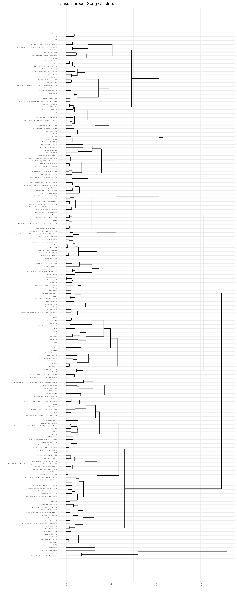
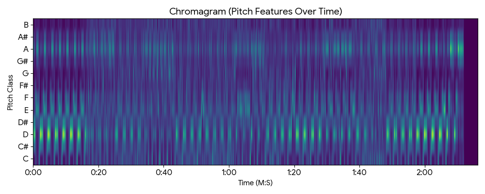
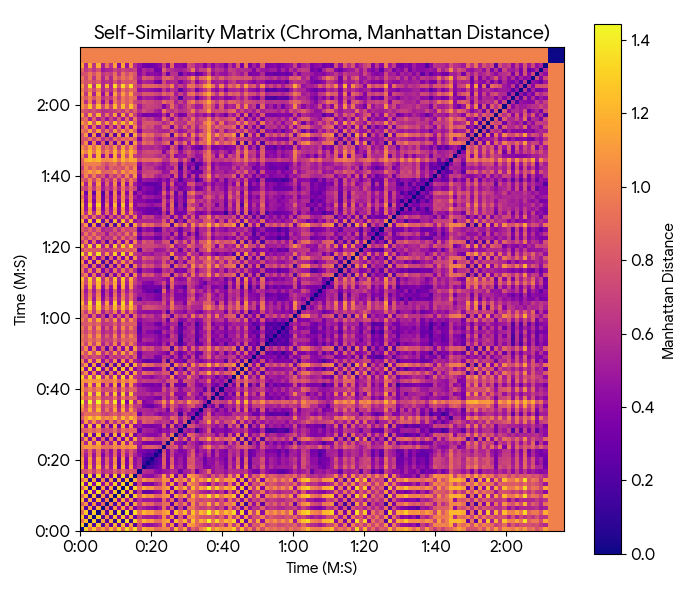
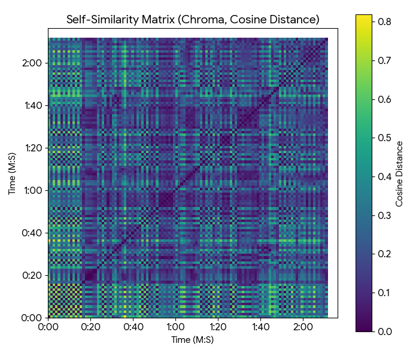
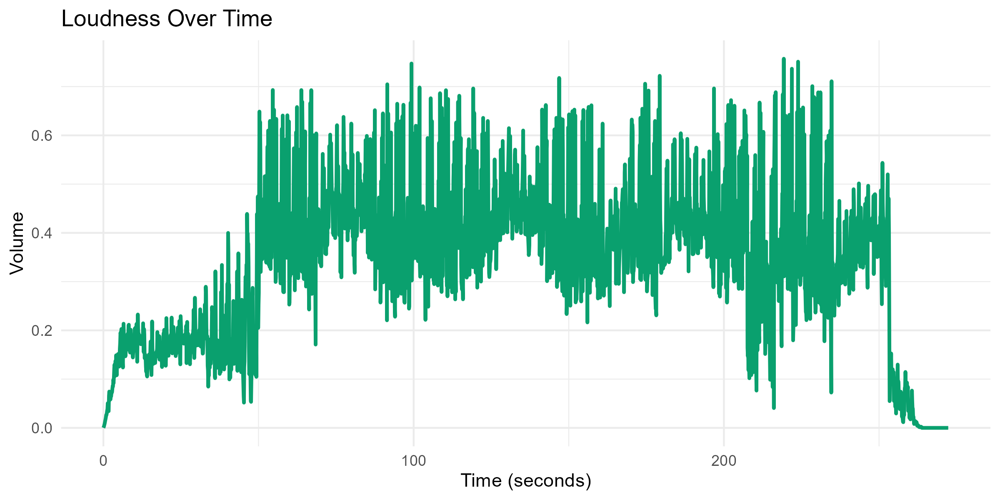
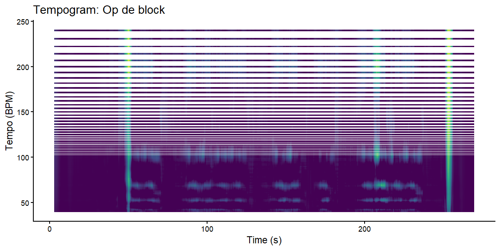

I selected “Op de block” by Kevin and Emms as the focal track for this portfolio because it exemplifies a compositional strategy that is central to contemporary Dutch hip-hop: the use of a static harmonic and rhythmic foundation over which vocal performers introduce variation through flow, delivery, and lyrical content. From an analytical perspective, the track raises an interesting question rooted in form and perception — how does a piece of music sustain listener engagement over several minutes when its tonal centre, tempo, and core instrumental loop remain essentially unchanged? This stands in contrast to traditions in Western popular music where harmonic progression (e.g. verse–prechorus–chorus key lifts) is the primary engine of formal differentiation.
The analytical pipeline for this project was built entirely in R, using the tidyverse ecosystem for data manipulation, ggplot2 for visualisation, and the compmus package for extracting chroma vectors and computing self-similarity matrices. Track-level audio features were retrieved through the Spotify Web API via spotifyr. The final dashboard was assembled using Quarto in the dashboard format with the darkly theme.
Any computational music analysis rests on a chain of assumptions at three levels — corpus selection, feature computation, and data analysis — and acknowledging these is essential for interpreting the results honestly.
Corpus selection. The class playlist skews heavily towards modern Western popular music, with a strong representation of hip-hop, pop, and electronic genres. This introduces a genre bias into the clustering analysis: the dendrogram reflects internal variation within that stylistic space rather than the full diversity of global musical traditions. Including, for example, Javanese gamelan, Indian classical raga, or West-African polyrhythmic drumming would fundamentally restructure the distance matrix and produce entirely different cluster boundaries.
Feature computation. Spotify’s audio features (danceability, energy, valence, etc.) are derived from proprietary machine-learning models trained on undisclosed datasets. We treat these scalar values as reliable proxies for perceptual qualities, but we cannot inspect or reproduce the underlying algorithms. Furthermore, chroma features — which collapse all octave instances of a pitch class into a single bin — deliberately discard register information. This is useful for key estimation and harmonic analysis, but it means that melodic contour (whether a line rises or falls across octaves) is invisible in a chromagram. For a track like “Op de block,” where melody is secondary to rhythmic delivery, this trade-off is acceptable; for a Romantic art song it would be far more problematic.
Data analysis. Self-similarity matrices depend on the chosen distance metric. Cosine distance emphasises the direction of chroma vectors (i.e., which pitch classes dominate regardless of overall loudness), while Manhattan distance is more sensitive to absolute magnitude differences and therefore picks up timbral and dynamic changes. Neither metric captures temporal ordering within a frame — they treat each time slice as an unordered bag of features. Additionally, the tempogram relies on autocorrelation of an onset-strength envelope, which assumes that perceived tempo corresponds to periodicity in spectral flux. In tracks with syncopated or swung rhythms, the autocorrelation peak may not align with the listener’s felt beat.
The central finding of this analysis is that “Op de block” derives its formal structure almost entirely from timbral and dynamic variation rather than from harmonic progression. The chromagram confirms a sustained tonal centre on D major (with prominent energy in the pitch classes D, F#, and A) that persists without modulation across the full duration. In conventional tonal analysis terms, the piece never leaves the tonic triad — there is no dominant preparation, no subdominant departure, and no secondary dominant borrowing.
This is not a compositional weakness but a deliberate aesthetic choice rooted in the conventions of loop-based hip-hop production. Producers in this tradition build what you might call a “groove matrix” — a short, self-contained rhythmic and harmonic unit designed for indefinite repetition. Structural differentiation is then achieved through additive layering: introducing or removing instrumental voices, varying the vocal texture (rapped verses versus sung hooks), and manipulating loudness through mix automation and dynamic compression. The Manhattan self-similarity matrix makes this process visible as clearly bounded rectangular blocks, even though the cosine matrix — which is blind to loudness and timbre — shows near-uniform similarity throughout.
This separation between harmonic stasis and timbral dynamism is a defining characteristic of hip-hop that distinguishes it from chord-driven genres like singer-songwriter pop or jazz standards. It suggests that traditional harmonic analysis alone is insufficient for understanding form in loop-based music, and that timbral and rhythmic features deserve equal analytical weight.
The methods demonstrated here have practical applications beyond academic analysis. Music producers could use self-similarity matrices during the mixing stage to verify that intended structural contrasts (verse vs. chorus vs. bridge) are actually perceptible in the spectral data — a kind of objective “second opinion” on arrangement decisions. DJs performing live sets could compare tempograms and Manhattan SSMs of candidate tracks to identify pairs with compatible tempo profiles and timbral block structures, ensuring smoother transitions. In music information retrieval (MIR) research more broadly, the combination of chroma-based and timbre-based self-similarity is already a standard approach in automatic song-segmentation systems, and the visualisations produced here follow that same logic. Finally, in music education, these tools can help students who lack formal theory training to “see” harmonic and structural properties that would otherwise require advanced ear training to perceive.

The dendrogram above was produced by hierarchical agglomerative clustering (Ward’s minimum-variance method) over five standardised Spotify audio features: danceability, energy, valence, acousticness, and instrumentalness. Euclidean distances were computed on z-scored features so that no single dimension dominates the metric purely due to scale differences.
Ward’s linkage was chosen because it tends to produce compact, roughly equal-sized clusters, which is desirable when exploring a heterogeneous playlist. Other linkage methods (e.g., single or complete) would produce either long chains or very uneven merges, making visual interpretation harder.
A hip-hop track like “Op de block” would be expected to sit in the high-danceability, high-energy, low-acousticness region of this feature space. The Spotify page for the track lists a duration of approximately 232 seconds (~3:52), and based on the tempogram analysis below the primary tempo is around 100 BPM. Combined with the heavy compression visible in the loudness curve, these values place it firmly in the cluster of beat-driven, loud, rhythmically rigid material — far from the branches containing singer-songwriter and acoustic tracks where acousticness dominates and energy tends to be lower. The separation confirms that Spotify’s feature space captures genre-relevant distinctions even with only five scalar dimensions, though finer sub-genre differences (e.g., boom-bap vs. trap) would likely require additional features such as speechiness or spectral contrast.

The chromagram displays the distribution of spectral energy across the twelve pitch classes (C, C#, D, … , B) over the full duration of the track. Brighter cells indicate higher normalised energy in that pitch class at that moment in time.
Three pitch classes dominate throughout: D, F#, and A — the root, major third, and perfect fifth of a D major triad. The consistency of this pattern across the entire timeline indicates that the instrumental loop is harmonically static: there are no secondary chords, no passing diminished or augmented sonorities, and no chromatic voice-leading. In tonal-theory terms, the harmonic rhythm is essentially zero — the rate of chord change is once per song rather than once per bar or once per phrase.
This is characteristic of a production approach in which the chord functions not as part of a progression but as a timbral layer — a sustained harmonic colour that defines the sonic identity of the beat. The rhythmic placement of these chord stabs (the pattern of note onsets within each bar) contributes more to the perceived groove than the pitch content itself. This is why the track “feels” rhythmically active despite being harmonically inert: the ear tracks the onset pattern, not the interval structure.
It is worth noting that the chromagram’s octave-folding means we cannot determine the exact voicing of the chord (e.g., whether the F# sits above or below the A). For a more complete harmonic picture, a constant-Q spectrogram or a pitch-class distribution weighted by register would be needed.


The two self-similarity matrices (SSMs) offer complementary views of the track’s large-scale form.
Cosine SSM (right). Cosine distance measures the angle between two chroma vectors, making it invariant to overall magnitude. Because “Op de block” maintains the same pitch-class profile (D, F#, A) from start to finish, the cosine matrix is nearly uniformly bright — every frame is harmonically similar to every other frame. The faint diagonal striping reflects the short-period repetition of the chord-stab pattern within each bar. This matrix effectively confirms that harmony contributes almost nothing to formal segmentation in this track.
Manhattan SSM (left). Manhattan (L1) distance sums the absolute differences between feature vectors, making it sensitive to changes in the magnitude of individual chroma bins — which in practice correlates with changes in instrumentation, vocal presence, and mix loudness. Here, clearly delineated rectangular blocks emerge along the diagonal. Each block corresponds to a section where the timbral profile remains internally consistent (e.g., a verse with rapping and sparse instrumentation, or a hook with layered vocals and fuller production). The sharp transitions between blocks mark formal boundaries: verse-to-hook transitions, instrumental breaks, and the intro/outro.
The contrast between the two matrices is itself the most informative finding. It demonstrates that the structural segmentation of “Op de block” is driven entirely by timbral and dynamic contrast, not by harmonic change — a pattern that generalises across much of contemporary hip-hop and electronic dance music, where the “drop” or “switch” is a timbral event rather than a harmonic one.


Loudness. The RMS loudness curve (computed in 0.1-second windows) shows the track’s dynamic shape. The first ~10 seconds are near-silent, then the volume rises sharply once the beat enters. From roughly 40 s onward, the RMS fluctuates between about 0.2 and 0.7 on a normalised scale, with frequent spikes up to 0.6–0.7 during the loudest moments and dips back to ~0.2 during sparser passages (e.g., transitions between verse and hook, or moments where the beat briefly strips back). The overall envelope is not a flat plateau but a jagged, high-energy waveform — the peaks are loud but the dips between them are clearly visible, indicating that while the track is heavily compressed, there is still meaningful dynamic contrast between sections. The final fade-out begins around 240 s and drops to zero by ~270 s. This pattern is typical of commercial hip-hop mastering, where compression is used to push average loudness up for streaming and club playback, but section-level dynamics (verse vs. hook energy) are still preserved to some degree.
Temporal features. The cyclic tempogram estimates local tempo by computing the autocorrelation of a spectral-flux onset-strength envelope within sliding windows. For “Op de block,” the result is a bright, steady horizontal band centred at approximately 100 BPM that runs across the entire duration without drift. A second, fainter band appears near 200 BPM (the double-time harmonic) and some low-energy activity is visible around 50 BPM (the half-time sub-harmonic) — both are mathematical artefacts of the autocorrelation rather than real tempo changes. The vertical bright spikes at certain time points (around 30 s, 100 s, 200 s, and 270 s) correspond to section transitions where the onset pattern briefly changes, causing a momentary spread in the autocorrelation before the beat locks back in.
This rigidity is functional: in hip-hop, the rapper’s flow (the rhythmic pattern of syllable delivery) is tightly synchronised to the beat grid. A drifting tempo would disrupt the micro-timing relationships between vocal onsets and drum hits that give a verse its rhythmic feel. The tempogram confirms what the genre conventions predict — a locked, programmed beat at ~100 BPM that prioritises rhythmic precision over expressive tempo variation. For comparison, a tempogram of a freely performed classical piece would show far more vertical spread and gradual drift, reflecting the performer’s use of rubato as an expressive device.